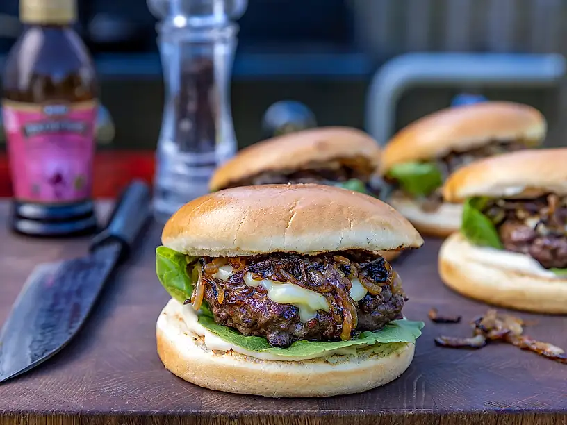

Hamburgare

Beskrivning
Inget slår en hemmagjord hamburgare! Toppa med karamelisserad lök och tryffelmayo och du kommer aldrig vilja äta dina burgare på något annat sätt efter det. Mums!
Ingridienser
Hamburgare
- 2 gula lökar
- 1 msk smör
- 500 g högrevsfärs
- 1 msk Bong Touch of Taste Brynt Schalottenlöksfond
- 2 msk olivolja
- 8 skivor ost
- 4 hamburgerbröd
- salladsblad
Tryffelmajo
- 1,5 dl majonnäs
- 0,5 tsk tryffelolja
- 1 tsk Bong Touch of Taste Brynt Schalottenlöksfond
Steg
- Skala och skiva löken. Stek den långsamt i smör tills löken blivit mjuk och vackert gyllenbrun.
- Vispa samman majonnäs, tryffelolja och fond. Smaka av med peppar, fond och tryffelolja.
- Smaksätt färsen med fond, salt och peppar.
- Forma 4 fina burgare och ringla lite på lite olivolja.
- Grilla burgarna och lägg på osten så att den smälter fint.
- Rosta bröden och montera fina burgare.